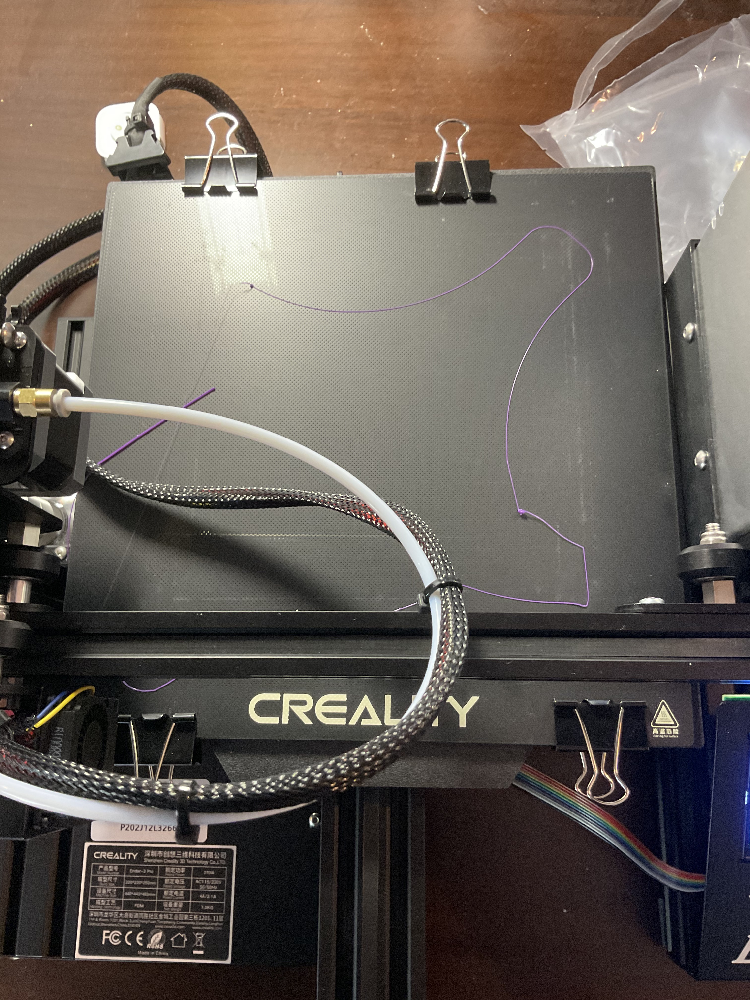
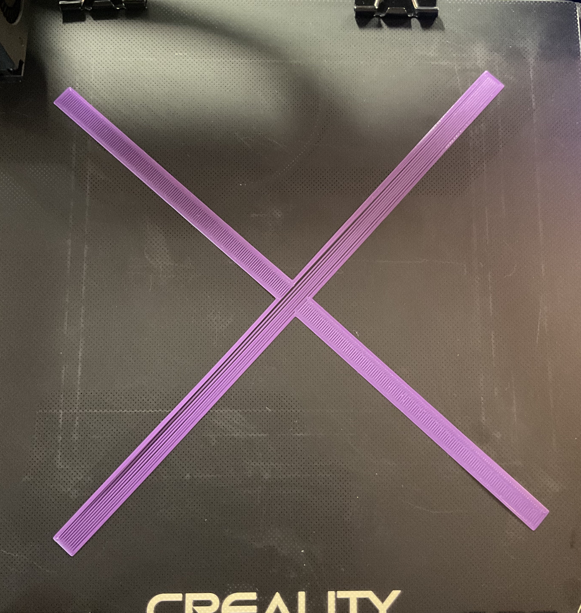
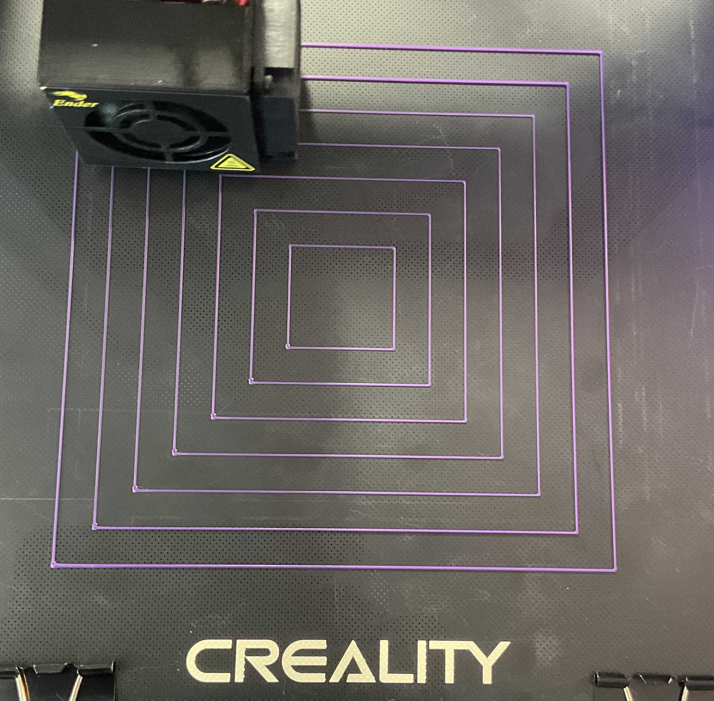

bed leveling! first prints!
I got started with manual bed leveling using this video. I auto-homed, then disabled the steppers to move things around manually. Starting with the front left corner, I placed the extruder ~1cm inside of my workable area (which is cut down slightly by the clips I'm using to attach the glass bed). I brought all the corners down a few turns before beginning. Using a piece of paper from a journal, I brought the corner up until the paper was pinched and the paper crumpled/folded when I moved it around, then slowly brought it down from there. (Just a small turn really changes this a lot!). Videos commented that you want a bit of drag - not too tight, not too loose, a goldilocks situation. I erred on the side of too loose to start so that I could more systematically tighten things up on subsequent iterations. After leveling the front right corner and then to the back right, I noticed it was too high and the nozzle was going to scrape the bed to get over, so I backed off the back two corners even more. It took me about three round trips to get everything feeling about the same. I figured that things were a bit too far away but wanted to see what would happen!
For the sake of following along with the video, I used their linked calibration print with all standard settings in Cura. (It was actually too big for my print area, so I scaled it down a bit). It was immediately clear that the nozzle was too far away; the front of the print didn't adhere to the bed at all, and the print started moving around and become spaghetti.

In readjusting the manual bed leveling, I switched to normal notebook paper because the journal paper I was using is of a thicker stock. I was also more aggressive/less timid in my tightening. I tightened to the point of almost-crumpling when moving, and then backed off ~1/8 turn. In moving corner to corner some parts of the bed were too high and I couldn't get the nozzle over, so I went back and ever-so-slightly lowered the bed in the previous corner. The results were better but still not very goo

Since I didn't see any signs of the nozzle being too close (ridges, thin-to-no filament), I went ahead and used a receipt instead of notebook paper, which was thinner still. I also opted for this calibration routine from YouTuber CHEP which conveniently moves the extruder around for you to test the distance. Then, I printed the concentric squares, testing to see if I could knowck them off with my finger. If I could, I raised that side ~1/8 turn. After running this process once & live adjusting, I printed again to see how things looked:

I couldn't knock the first layer off with my finger anymore, and nothing looked too light/transparent now.